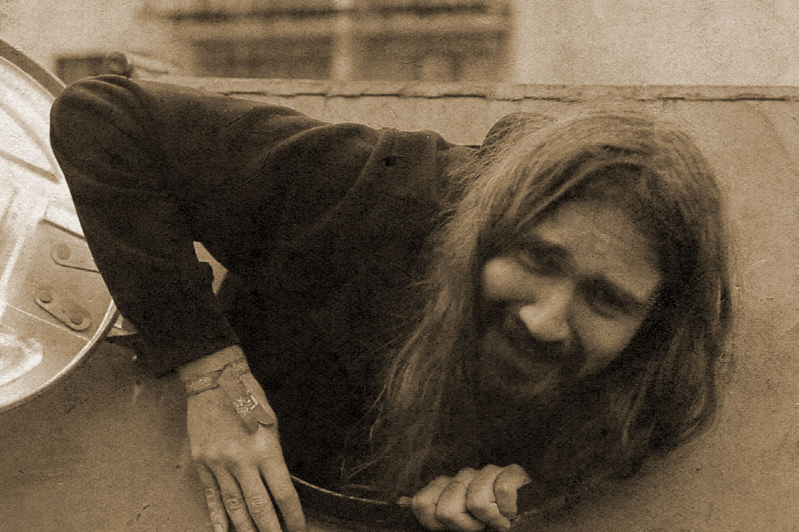

Súťažné filmy
Charlie The Bunny eating tiny sushi
námět, režie, produkce, střih, kamera: Otakar Hypš
hrají: Otakar Hypš
hudba: Jahzzar – Take Me Higher
Dva kelímky aka stativ, jeden od jogurtu, druhý jsem našel ráno na zemi cestou domů. Ještě bylo cítit, že v něm někdo před pár hodinami měl víno. Lampička z IKEA zastíněná papírovým kapesníkem aka světlo. Bílé plátno od Krásky a skvělá natáčecí neděle s Charlie.

...ale už poslední
námět: Vít Dvořák
režie, produkce, postprodukce, střih: Mojmír Kubištel, Jan Sláma
scénář: Jan Sláma, Vít Dvořák
hrají: Viktor Nepomuk, František Maňák, Tomáš Hloušek, Tomáš Stránský, Vít Dvořák
kamera, světla: Andrej Halas
zvuk: Tomáš Kiska, Veronika Kosíková
kompars: Kristýna Mikulová, Jakub Senko
Jirka, Petr a Mirek jsou kamarádi žijící na malém městě. Často se setkávají u piva, kde řeší své osobní problémy. Jeden den si k nim přisedne zvláštní člověk...

Shitman – A new hero is born
režie, scénář, postprodukce: Samuel Briškár
hudba: Jirka Křupala
hrají: Matej Briškár, Samuel Zima, Michal Slávik, Andrea Takáčová, Peter Fedor, Dominik Budínský vypomáhali: Juraj Briškár, Michal Černý
Narodil sa, aby zmenil svet. V dobe, ktorá potrebuje odvážneho ajťáka, prichádza ON.
Pygmalion
námět, scénář, kamera, režie, střih, postprodukce: Tomáš Schmidl
zvuk, světla: Martin Štěrba
hrají: Pavel Pospíšil, Veronika Troppová, David Robotka, Roman Veselý
Student informatiky Tomáš si jednoho dne polije notebook kávou. A od té doby se začnou dít podivné věci...
ŇITŘ
námět, režie, produkce, výtvarné filtry, střih, barvy, herec: Kryštof Zvolánek
kamera: Jana Čecháčková
hudba: Dan Řezníček
A false dilemma is a type of fallacy that creates an impression of only two options, when in reality there are more. Generally, when this rhetorical strategy is used, one of the options is unacceptable and repulsive, while the other is the one the manipulator wants us to choose.

Červená Karolka
režie, střih: Michal Románek
kamera: Jan Szlauer
zvuk: Lukáš Kubiš
hrají: Ivana Janíková, Matej Poklemba, Elena Kurilová
Klasická rozprávka v modernom prevedení.
Lifeless
scénář, animace: Matej Ondriaš
dabing: Juraj Bielik, Patrícia Tonkovičová, Vladimír Kubica
hudba: Erik Brisuda
Nevieme, čo máme, kým to nestratíme. Tragédia o láske.

Happiness
režie, kamera, střih: Martin Jancík
asistent režie: Michal Kvocera
vedoucí výpravy: Matej Majerík
zvuk: Adam Kuchta
hrají: Juraj Brezina, Martin Prešnajder, Peter Prešnajder
Príbeh o mužovi, ktorý hľadá skutočné šťastie.
Burnout Syndrome
režie, hudba, text, postprodukce, námět, scénář: Jakub Špiřík
hudba: Clawed Forehead
hrají: Lukáš Mareček, Gabriela Povrazniková, Soheil Shadloo, Jakub Špiřík, Michal Tuček, Pavlína Šuhajová, Gabriel Ádám, Rob Paterlini, Tomáš Šťastník, Petr Vaněk, Ema Šturalová
Videoklip pro skladbu Burnout Syndrome alternativní rockové kapely Clawed Forehead.

Archie, the gender fighter
režie, scénář: Lenka Michalková, Jan Sláma, Tomáš Šťastník
postprodukce, animace, hrají: Lenka Michalková, Jan Sláma
fotografie, hudba, zvuk: Tomáš Šťastník
Sociálně-psychologicko-minimalistická óda na kapesníček.
Čas Hněvu
scénář, kamera, režie: Martin Vašička
zvuk: Vojtěch Vyskočil
hrají: Bára Beňušová, Jan Machač, Nikola Linhart, František Fiala, Vojtěch Vyskočil
Když se na člověka všechno sesype, ovládne se nebo podlehne?

Cerveza
námět a scénář: Ondřej Bartuška, Tomáš Pilný
režie, kamera, střih: Tomáš Pilný
pomocná kamera: Martin Vašicka, Vojtěch Vyskočil, Ondřej Bartuška
hráli: členové SHŠ los bebedores de CERVEZA o. s.
Všichni jsme jen figurkami ve hře mocných.

SMS
kamera, střih: Filip Kišš
scénář, režie, střih: Tomáš Paulďuro
kamera, světlo: Magdaléna Guráňová
Ako by ste sa zachovali vo chvíli, keď vám príde SMS s tým, že vaša polovička je v ohrození života? Michal sa do takejto situácie nechtiac dostane a má len pár minút na to, aby svoju milovanú zachránil.

Špatná volba
námět, scénář, režie: Jana Čecháčková
kamera: David Kouřil, Jana Čecháčková
zvuk: Martin Vašička, Gabriela Podolníková, Lukáš Kubiš
postprodukce: Jana Čecháčková
hrají: Petra Srbová, Jakub Vlček, Jan Kalník, Gabriela Podolníková
Příběh dvou lidí plný lásky, cigaretového kouře, odlišných názorů a tajemství. Je kouření opravdu vždy špatná volba?

Breath
námět, režie, scénář, střih, kamera: Zuzana Žabková
spolupracovali: Martin Majláth
hrají: Veronika Maťúšová, Zuzana Slaná, Andrej Krajčovič, Martin Majláth, Ján Žabka
Každý z nás občas zažíva ťažšie obdobie, kedy máme pocit, že to ďalej nezvládneme. Jana sa rozhodne svoje trápenie riešiť podľa seba.

Bonusová sekcia
Trailer 15. FF FI (PV110)
autoři: studenti PV110 (podzim 2014)
Alternatívna verzia traileru pre 15. FF FI MU vytvorená v rámci predmetu PV110.
TAM
námět, režie, výprava: Martin Babáš
kamera, režie, střih, zvuk, produkce: Jakub Nedoma
hrají: Martin Babáš, Julie Komínková
Relativno – já – TAM – my – Absolutno.

Miluj, odpouštěj, recyk luj
námět: Jana Ludvíková
kamera, střih: Kryštof Zvolánek
spolupracovali: Václav Mach, Jakub Špiřík, Petr Vacek
hudba: Lucia – Silence
Osobní výpověď formou typografického body artu zasazená do prostředí poutního místa.

Jak?u.b.
autoři: Václav Mach, Jana Ludvíková, Jakub Špiřík, Petr Vacek, Kryštof Zvolánek
hrají: Václav Mach, Jana Ludvíková, Jakub Špiřík, Petr Vacek, Kryštof Zvolánek, Helena Lukášová, Anna Ronovská, Jiří Víšek, hlemýžď, obyvatelé města Králíky a další
Konceptuální dílo nevypovídající hodnoty z výtvarného plenéru Ateliéru grafického designu a multimédií Fakulty informatiky Masarykovy univerzity 2014.
fí!
námět, režie, scénář, hrají: Gabriel Ádám, Matúš Ďurčík, Jiří Gerat, Matěj Kašpar Jirásek, Martina Krasnayová, Martina Marešová, Andrea Mužíková, Anna Ronovská, Zuzana Žabková
fotografie: Pavlína Šuhajová
catering: Anna Kiliánová
střih, animace: Matěj Kašpar Jirásek
Upoutávka na crowdfunding knihy komiksů „FÍ!“ Ateliéru grafického designu a multimédií FI.
Happiness – Behind the scenes
režie, kamera, střih: Martin Jancík
asistent režie: Michal Kvocera
vedoucí výpravy: Matej Majerík
zvuk: Adam Kuchta
hrají: Juraj Brezina, Martin Prešnajder, Peter Prešnajder
Krátky dokument o tom, ako vznikal film Happiness.
Dokument 14. FF FI MU
autoři: Jeroným Pelikovský, Jan Šplíchal, Jiří Gerat, Tereza Vlčková
Dokument ze 14. ročníku FF FI MU.
Dokument 15. FF FI MU
autoři: Jan Szlauer, Martin Jancík, Jana Čecháčková
Dokument z 15. ročníku FF FI MU.